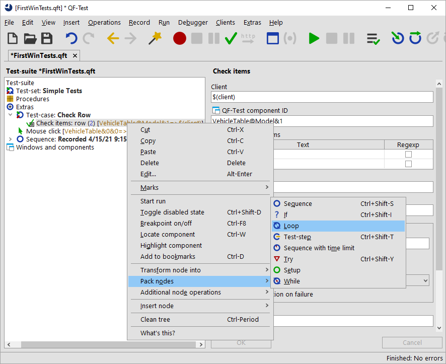
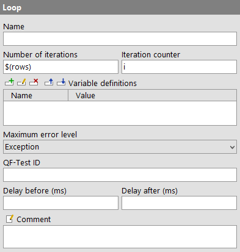
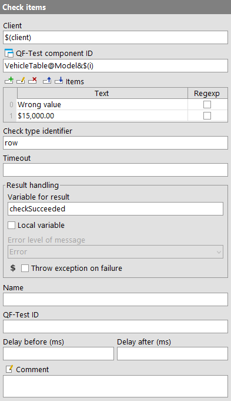

| Version 6.0.3 |
QF-Test provides two different kinds of nodes loops:
Note
'Loop' nodes will always stop after the given number of times.
In the case of 'While' nodes, however, you need to make sure that the condition
will become false at some point. Otherwise you would have an infinite loop. In
interactive mode you can always stop execution by hitting the pause button
 .
In batch mode you would have to kill the QF-Test process. (You start QF-Test in batch mode
using the command line parameter
.
In batch mode you would have to kill the QF-Test process. (You start QF-Test in batch mode
using the command line parameter -batch. Then QF-Test does not start its UI
and just executes the given test-suite.)
In the following exercise we want to implement a test-case checking whether a certain row is displayed in the table of the CarConfig application.
The actions of the test-case will be:
Please start with recording a check on the row of interest:
|
| |||
|
| Figure 26.4: Transform a node into another one | ||
In general, QF-Test lets you add nodes very efficiently by packing one node into another one:
|
|  | ||
|
| Figure 26.5: Pack a node into another one | ||
QF-Test evaluates dynamically which nodes may be packed into one another and only presents the appropriate ones. So, in case you do not find the 'Loop' submenu item make sure you have right-clicked the correct node. The same holds true for the 'Transform node into' and 'Insert node' methods.
In the next series of actions we want to set the value for the 'Number of iterations'
attribute of the 'Loop' node. In order to do so we need to find
out how many rows the table has. There is no simple node that you could use.
However, in the last chapter we learned that the standard library provides
a lot of extended functionality. So let's insert the procedure getRowCount
from the package qfs.win.table in the standard library.
Adding a procedure via [Ctrl-A] was described in Manual creation of procedures. If you would like to check with the screenshots please have a look there.
rows in
the 'Variable for return value' attribute.
id in the
variable definitions table to the QF-Test component ID of the table, i.e.
VehicleTable.
$(rows) in
the 'Number of iterations' attribute of the 'Loop' node.
i
in the respective attribute of the 'Loop' node.
|
|  | ||
|
| Figure 26.6: Details of a 'Loop' node | ||
In the next series of actions we will change the recorded row index to the iteration counter and add a variable for the result to the details of the 'Check' node. Then we will add an 'If' node after the 'Check' node evaluating the result, with a 'Break' node within to quit the loop when the row was found.
$(i). The QF-Test component ID should now read VehicleTable@Model&$(i)
checkSucceeded in the 'Variable for result' attribute
and click the OK button.
$(checkSucceeded) in the 'Condition' attribute
of the 'If' node and click the OK button.
The variable checkSucceeded will be set to either true or false by the
'Check' node so that the reference to the variable $(checkSucceeded)
is all we need to enter in the
'Condition' attribute of the 'If' node.
In the next series of actions let's add an 'Else' node as the last node in the 'Loop' node. It will only be entered if all repetitions of the loop were executed, which in our case means that the row was not found and the check never became true.
logError contained in the
package qfs.run-log as described above.
Row not found in the value field of message in the
'Variable definitions' table.
withScreenshots in the
'Variable definitions' table from false to true.
When you run tests in batch mode screenshots are a great help for analyzing
errors. On the other hand a great number of screenshots lead to a big log-file.
This is why the default value for withScreenshots is false.
Last, let's complete the test-case with 'Setup' and 'Cleanup' nodes and move it into the top part of the test-suite.
This is what the new test-case would look like:
|
|  |
||
|
| Figure 26.7: The new test-case | ||
It should run without error.
Wrong value.
|
|  | ||
|
| Figure 26.8: Details of the 'Check items' node | ||
This time the 'Else' node should be entered and you should get an error message.
| Last update: 9/6/2022 Copyright © 2002-2022 Quality First Software GmbH |